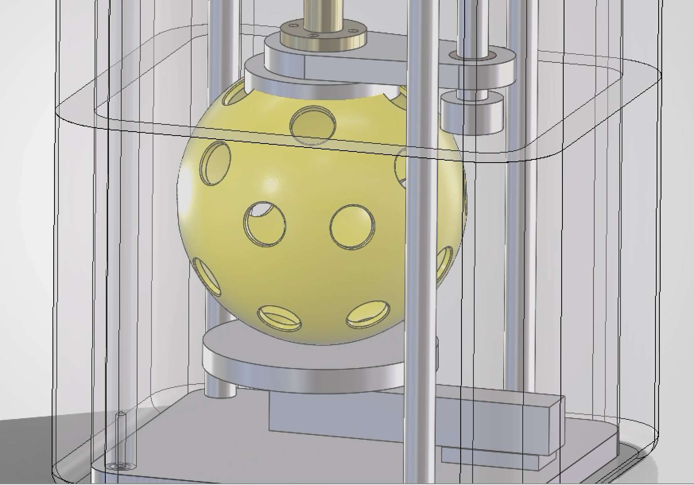

DESCI 501/ME 455 · Gate Review 3 · Detailed Design and Validation
CuPickle detailed design
CuPickle is now a fully engineered, battery-powered courtside tester. A player sets the ball on a locating peg and closes the door and taps Start; a motor presses the ball a fixed 2 mm while a load cell underneath measures force, and the screen shows PLAY or RETIRE with an icon and a sound.
Product, customer and priority benefit
Product. CuPickle, a portable pickleball ball-condition tester used courtside, before play or between games. Target customer and user: the frequent, competitive player who plays at least weekly in league, rated or tournament play and brings their own balls (Customers & Benefits). Priority benefit: an objective keep-or-retire answer the player trusts more than squeezing or bouncing the ball; 52.8% of surveyed players rate their confidence in that manual check at 3 or lower of 7 (Market Research).
Updated design problem statement
Design a portable, battery-powered tester for frequent, competitive pickleball players that measures a ball's stiffness with one fixed 2 mm press at a repeatable spot and tells the player, in 30 s or less and without damaging the ball, whether it still plays like a new ball of the same model, at a retail price near $100.
Two things changed since Gate Review 2. The rolling two-roller cradle and its 4–6 presses per ball are gone: the alpha prototype's ball drifted on the rollers (FMEA RPN 392, the highest), and our Instron test showed the used balls were softer all over rather than at one spot. The ball now sits on a locating peg and is pressed once. The readout is no longer an undefined "readout": it is a touchscreen showing a large check or X, the word PLAY or RETIRE, and a distinct sound for each (Social Impact Evaluation).
The minimum viable product



Architecture. Five subsystems (MVP: Architecture and Operation):
| Subsystem | Main parts and materials | Function |
|---|---|---|
| Frame | Baseplate (P10) and Top Plate (P02) tied by 4 Frame Posts (P13); 6061-T6, clear anodized | Keeps the test force inside a stiff frame |
| Press drive | NEMA 17 stepper with integrated Tr8×8 lead screw (P01, P03, P04), Carriage (P06), Press Plate (P12), 4140 steel Anti-Rotation Rod (P07) in a bronze bushing (P05); the rod's flange is the hard stop | Lowers the plate and presses the ball once |
| Force sensing | 20 kg straight-bar load cell (P09), Load Cell Plate (P15) with an M4 set-screw locating peg (P14) | Seats the ball and measures force under it |
| Electronics and power | Main board (microcontroller, TMC2209 driver, HX711 amplifier, USB-C charging), 9 V NiMH rechargeable battery | Runs the test, computes stiffness, grades the ball |
| Interface, safety, case | On/off switch, 2.8 in. touchscreen, door reed switch, IR ball-presence sensor, home switch, injection-molded ABS case | Result, door interlock, ball check, enclosure |
Table 1. MVP subsystems. Overall size 135 × 116 × 210 mm; CAD mass 4.74 lb (2.15 kg) without the battery and case electronics.
Operating sequence. Switch on (the plate homes) → open the door and set the ball on the peg → close the door (the reed switch and IR sensor must agree) → tap Start → the plate finds contact at 0.5 N and presses 2 mm at 2–4 mm/s → stiffness is the slope of force against travel, compared with a stored new-ball reference of the same model → PLAY or RETIRE shows with icon and sound → the plate returns home. Opening the door stops the motor at any point. The full use cycle, from first charge to storage and disposal, is on the MVP page.
Most important requirements and design drivers
| Design driver | Requirement | Target | Status |
|---|---|---|---|
| 1. Playability grading | Identifies low-performance balls (15%, S1) | Ratio within 0.05 of 0.90 (4 games) and 0.80 (8 games); ≥ 90% grade agreement | Partly supported by test |
| 2. Force-path accuracy | Repeatable (13%, S16), precise (S2) | %GRR < 10; ≤ 0.025 mm resolution | Resolved by analysis; bench test pending |
| 3. Ball location | Same spot every test (S1, S16) | ≥ 90% correct from one press; re-seat spread ≤ 5% | Decided (peg); test pending |
| 4. Test cycle time | Tests quickly (10%, S7) | ≤ 30 s | Analysis: about 10 s |
| 5. Player trust | Increases confidence (10%, S5) | ≥ 2-point gain on a 7-point scale | User study planned |
Table 2. Design drivers. Full methods on Technical Development Methods.
Engineering evidence behind the design
- Grading principle (test). Five new and five used balls, six positions each: used balls needed 11.5% less force at 2 mm (p = 0.045) and 8.0% less at 5 mm (p = 0.020); every used ball's mean sat below every new ball's at 5 mm. Force is linear with compression to 5 mm (R² ≥ 0.997), so a slope is a valid stiffness (Validation, Activity 1).
- Force path (analysis). The frame adds 0.00204 mm/N, 3.3% of a new ball's compliance; uncorrected, the worn/new ratio would read 0.809 instead of 0.804, a tenth of the 0.05 tolerance.
- Drive and overload (analysis). Tr8×8 power-screw model: 104–147 N of thrust at 0.25 N·m; the TMC2209 current is set so stall thrust is ≤ 177 N, under the load cell's 235 N safe overload.
- Structure (analysis). At the worst-case 235 N: Top Plate safety factor 19.7, Carriage 7.9, screw buckling 4.2, load-cell bolts 6.1; all aluminium stresses sit below the endurance limit (infinite life).
- Resolution and time (analysis). 1/16 microstepping gives 0.0025 mm per step; HX711 at 80 samples/s; one test takes about 10 s.
All calculations are on Parameter Analysis.
Critical failure modes and mitigations
| Failure mode (FMEA) | RPN | MVP mitigation |
|---|---|---|
| Ball not held; drifts on the cradle | 392 | Rollers replaced by a locating peg through one ball hole; one press per ball |
| Wrong grade shown | 288 | Ratio to a same-model new-ball reference; thresholds set on separate balls; PLAY / RETIRE / CHECK BALL with icon, word and sound |
| Ball of wrong model or temperature | 210 | Ball-model selection with stored per-model references; quick-start card tells players to test balls at room temperature and to re-reference after a model change |
| Low battery or stale calibration | 180 | Battery indicator; power-up self-check and steel-ball calibration |
| Force reading wrong | 175 | Stiff 1/4 in. 6061 frame; tare before each press; steel-ball compliance subtracted |
Table 3. Highest-RPN failure modes from the November 1 FMEA. Detail and revised ratings on FMEA.
The proof of concept
Purpose. Show that one fixed 2 mm press on a peg-seated ball gives a PLAY or RETIRE grade that agrees with a reference on at least 90% of balls, with %GRR under 10, in 30 s or less, without damaging the ball.
Configuration. A full-scale working tester built in the U-M machine shop from the same seven machined part drawings, motor, lead screw, load cell, peg, TMC2209 driver chip and HX711 amplifier chip as the MVP. Only the electronics packaging (Arduino and breakouts on a breadboard), power (a 12 V bench supply), display (small OLED and switches) and case (3D printed) are stand-ins.
How it represents the MVP. Everything in the force path is the MVP's geometry, material and components, so grading, repeatability, time and ball-damage results carry over. Battery life, the touchscreen, the door interlock and the molded case do not.
Status. Drawings, fabrication, assembly plans and BOM ($137.65) are complete; fabrication preparation is approved, pending shop sign-off of the drawings (Proof-of-Concept Prototype).

Important differences between the POC and MVP
| Element | MVP | POC | Effect on what we can conclude |
|---|---|---|---|
| Electronics | Custom board | Arduino Uno, TMC2209 and HX711 breakouts | Same chips; breadboard noise makes POC repeatability conservative |
| Power | 9 V NiMH rechargeable battery | 12 V bench supply | Battery life not tested; current per test is measured to size it |
| Interface and safety | Touchscreen, door interlock, IR sensor, home switch | OLED, switches; no interlock | Interlock and UI verified on the first MVP build; trained operators only |
| Rod and finish | 4140 steel rod; anodized | 6061 rod; bare | No effect on force; rod wear watched |
| Case | Molded ABS | 3D printed | Outside the force path |
Validation and verification results
Completed: a two-phase Instron compression test (Nov. 5 and Nov. 10). It supports driver 1: used balls are measurably softer. It also shows why the peg matters: one random spot graded a ball correctly about 75% of the time against 91% for four spots, so single-press accuracy at a fixed, peg-located spot is the first thing the POC must prove. Planned: blind grading of ≥ 20 held-out balls, gauge R&R (10 balls × 3 operators × 3 repeats), re-seat spread, stall thrust, cycle time, 50-test ball damage, and a player trust study with ≥ 21 weekly competitive players. Full matrix and procedures on Validation & Verification.

Most significant remaining risks
| Risk | Type | Next step |
|---|---|---|
| One press at the peg may not reach 90% grading agreement | Technical | Single-press blind grading on the POC |
| 2 mm signal (11.5% gap) is less certain than 5 mm (8.0%, lower p); ball play history was not recorded | Technical | Repeat with X-40 balls of known play history (0, 4, 8 games) |
| Unit cost $112 against a ~$100 price | Business / manufacturing | Cost-down in Activity 29 (display, board, motor) |
| 9 V NiMH battery gives about 70 tests per charge at the estimated 0.7 A draw | Technical | Measure current per test on the POC; confirm a full session per charge |
| Motor axial-load rating unknown | Technical | Get rating from Iverntech; thrust bearing if low |
| Case mold lead time 8–12 weeks, $35k | Manufacturing | Freeze case CAD early |
Gate Review 3 recommendation
The MVP is fully defined and its mechanics are supported by analysis; the grading principle has first test evidence. Before fabrication and validation we will: (1) make the drawing and process-plan revisions from design review (motor-bore machining on P02, reamed bore size and fit on P06, hole-pattern dimensions on P06 and P12, tapping depths on P13) and get shop approval; (2) add the wiring schematic, exact fasteners and the bench supply to the POC documentation; (3) pass a safety review before any powered test; and (4) show single-press grading accuracy at the peg. The design is not yet ready for commercial production.
How the design record fits together
Product requirements → design drivers → engineering analysis → failure assessment → MVP detailed design → POC design and fabrication → validation → impact assessment → gate recommendation.
Technical Development Methods
Five design drivers and how each is resolved.
02FMEA
How CuPickle could fail and what changed because of it.
03Parameter Analysis
Loads, drive, sensing, structure, time, materials.
04Minimum Viable Product
Architecture, CAD, materials, manufacturing, assembly, BOM.
05Proof-of-Concept Prototype
Scope, drawings, fabrication, assembly, BOM.
06Validation & Verification
Matrix, test records, plots and plans.
07Social Impact Evaluation
Social impact, eco-audit and Design for X.
08Appendix
Drawings, worksheets, data and reports.